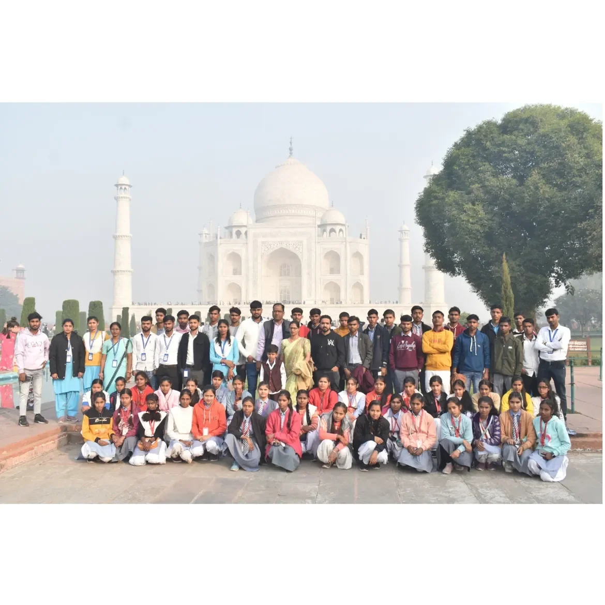

दो दिवसीय शैक्षिक भ्रमण
आगरा (ताजमहल) एवं मथुरा
विद्यालय द्वारा विद्यार्थियों के लिए शैक्षिक भ्रमण का आयोजन किया गया, जिसमें विद्यार्थियों ने ऐतिहासिक एवं सांस्कृतिक धरोहरों से परिचय प्राप्त किया। इस प्रकार के भ्रमण विद्यार्थियों को कक्षा की सीमाओं से परे व्यावहारिक ज्ञान प्राप्त करने का अवसर प्रदान करते हैं।

शैक्षिक भ्रमण — विद्यालय परिवार, ताजमहल, आगरा
व्यावहारिक ज्ञान
ऐतिहासिक स्थलों की प्रत्यक्ष जानकारी एवं अनुभव।
सामूहिक भावना
समूह में यात्रा के माध्यम से सहयोग व अनुशासन सीखना।
पाठ्यक्रम से जुड़ाव
इतिहास एवं संस्कृति विषयों की कक्षा-शिक्षा को सजीव अनुभव से जोड़ना।
उक्त शैक्षिक भ्रमण की सटीक तिथि एवं संपूर्ण यात्रा-कार्यक्रम विद्यालय के रिकॉर्ड के अनुसार उपलब्ध कराई जा सकती है।